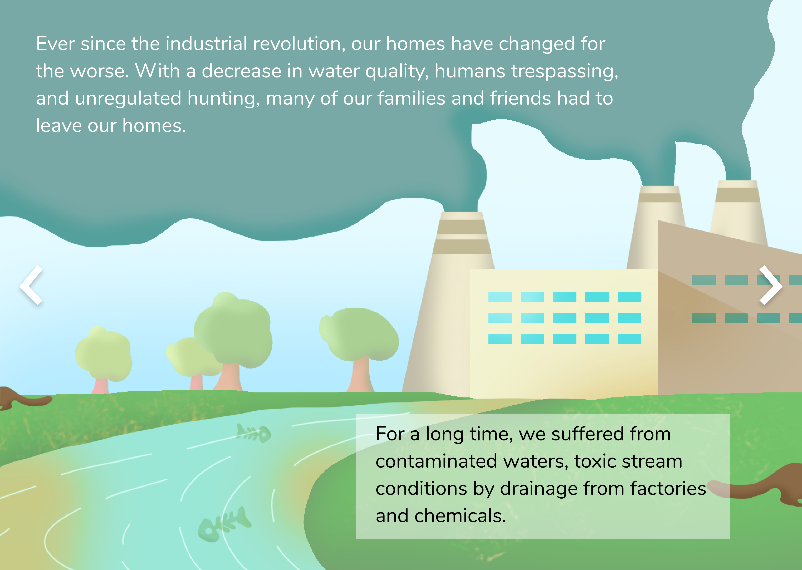
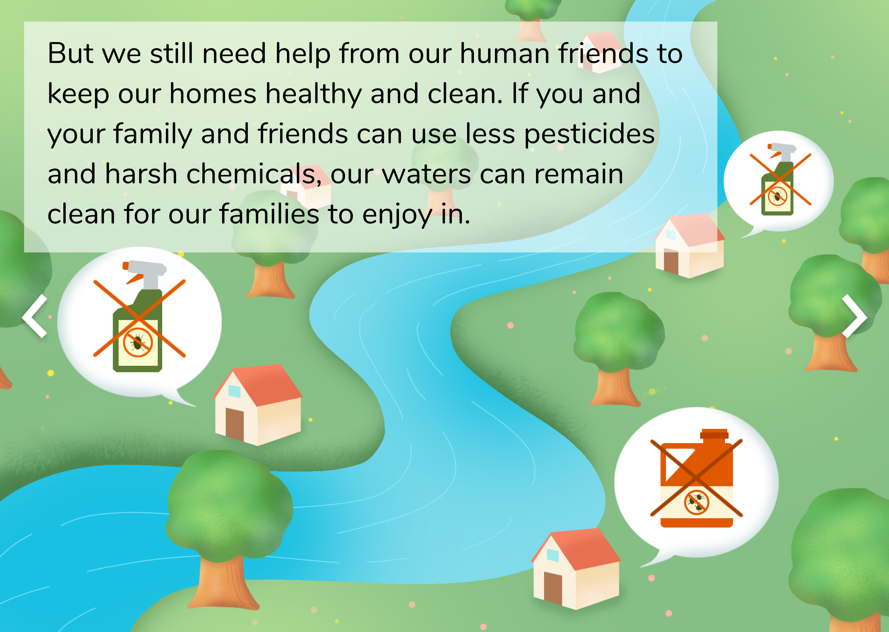
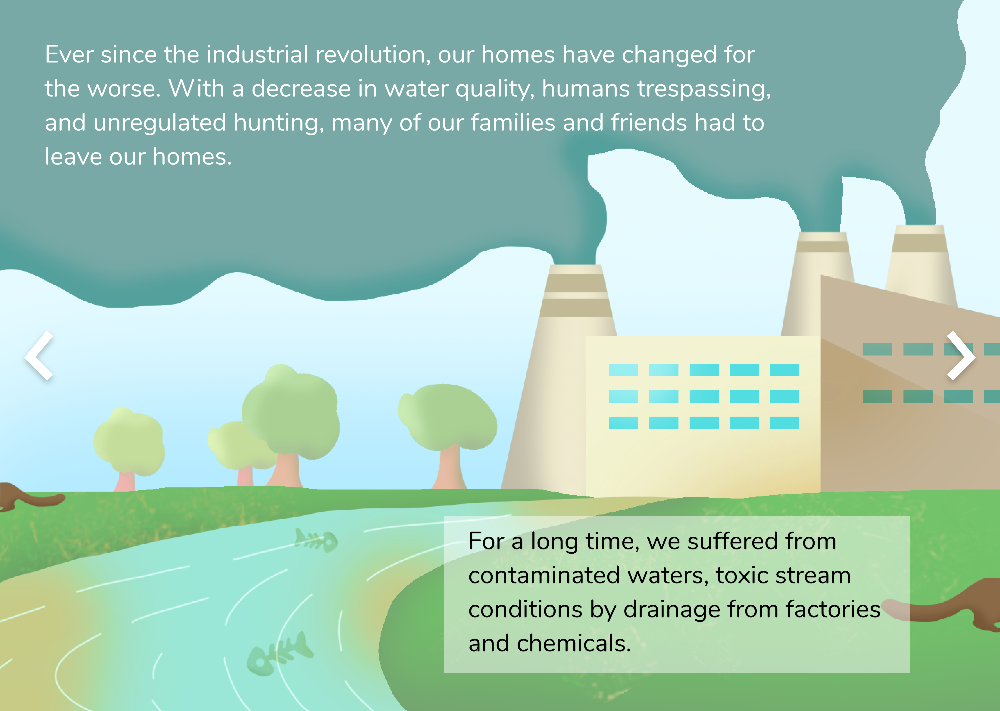
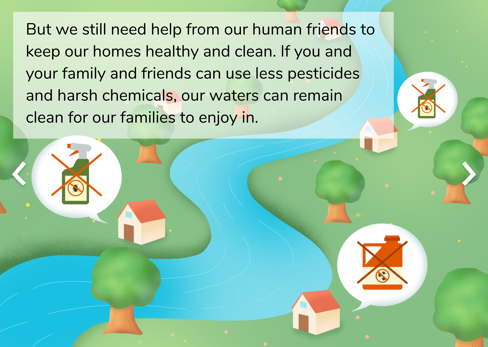

River Otter Virtual Tour
Project Description
The River Otter Virtual Tour project is an online activity plan created for student visitors during a virtual tour experience at the Carnegie Museum of Natural History. The project was created in partner with CMNH for the course 05-292: Learning in Museums.
Team Members
Cindy Liu
Ellie Li
Sihan Wu
My Role
I was mainly responsible for designing and creating the interactions for the pre-tour activity. I created storyboards, illustrations and the final Figma prototype. Aside from the prototype creation, I conducted research, wrote project documentation, and held user testing interviews.
Overview
Problem Statement
The current pandemic has prevented many from attending in-person activities, including museum tours.
Alternatively, virtual
tours at the Carnegie Museum of Natural History are one-hour-long live experiences that allow families and
students to engage
with the exhibitions remotely.
Considering the challenges of tours hosted over Zoom, we designed a plan of virtual activities that precede
and follow
a virtual tour session. The main theme of our project
centers on a display and an Anthropocene perspective from the North American Hall at CMNH. We chose to focus
on the story of the river otter in
Western Pennsylvania because it is a story close to local Pittsburgh residents and that it is a successful
human
intervention for wildlife protection. To enrich the virtual tour experience, we designed the virtual
activity plan with the
following questions in mind:
- How might we enhance young students’ engagement in the virtual tour?
- How might we provide a holistic learning experience for young students?
Target Audience
The majority of CMNH virtual tours are currently booked by elementary school groups, so we selected our target audiences to be elementary schoolers of grades 1-5.

Final Deliverables
Pre-Tour Activity
A click through program that teaches facts and trivia about river otters, as well as their reintroduction story in Western PA.

Post-Tour Activity
An interactive game that asks the player to identify potential pollutants that are harming the river otter habitats.

Design Process
Storyboards
1st Iteration
2nd Iteration
Screens


 



Evaluation Process
Methods
Survey - Conducted virtually, links with activity instructionsObservation - Recorded time duration, real time observation notes
Piloted Users
6 Elementary Schoolers, 16 College StudentsFeedback
Survey
Observation
Reflections
Bias and Limitations
Under COVID guidelines, we were able to evaluate 22 participants, conducting 4 real-time observations, and collecting 20 survey responses. From these 22 participants, 16 were college students (13 female, 3 male). 6 were elementary school students (2 female, 4 male). We recognize that the participant pool is biased and does not reflect the true population. The tested population has older, female students, which may result in the feedback collected not accurately portray the target audience’s experience.
Insights and Lessons Learned
Almost all participants in our prototype evaluation identified valid things that they learned about river otters through the activity. By playing the game, users learned about positive human roles in saving wildlife and are able to distinguish the connection between human activities and river otter population and habitat. To boost positive human roles is the visitor experience and one of the learning goals we want to meet and will continue to work on. However, we also need to find ways to add more interaction for deeper engagement and increase the accessibility of our game to fit more screen sizes and devices.